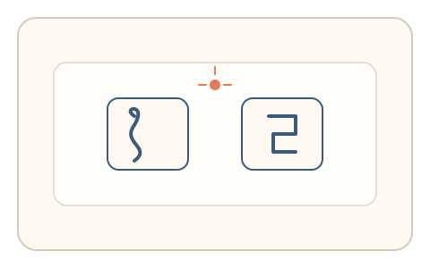
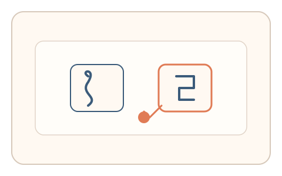
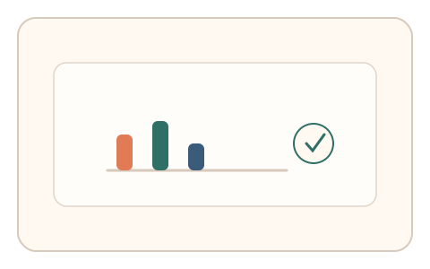

#78
视觉思考范式：文字与符号
已扩展
字符混淆强迫选择
在易混字符的快速闪现中让用户凭第一感觉选择，以反应时与选择偏向验证真实性。
概念原文
在易混字符之间（如 S/5、B/8）快速闪现，要求用户“第一感觉”选择；记录反应时与选择偏向。
利用人类先验偏置与时间压力下的选择分布。
研究背景
相似字符会引发稳定的感知混淆与偏向，人类在时间压力下的选择分布与反应时具有可预测的统计特征。通过记录首选偏向与反应时曲线，可提取区别于脚本的感知信号。
核心机制
- 快速闪现易混字符对（如 S/5、B/8）。
- 用户在限定时间内做出强迫选择。
- 记录反应时、选择偏向与回撤行为。
- 多轮随机字体与噪声扰动形成稳定分布。
用户流程
- 步骤 1：用户看到快速闪现的字符对。
- 步骤 2：用户凭第一感觉做出选择。
- 步骤 3：系统记录反应时与偏向并判定。
判定信号
反应时分布
人类在混淆任务中存在稳定的时间压力曲线。
选择偏向与回撤
真实用户会表现出一致的感知偏向与纠错模式。
判定逻辑
反应时与偏向需落在人类分布区间；过度快速、零偏向或零回撤判异常。
对抗面
- 脚本识别字符并直接选择
- 固定反应时模拟混淆任务
防御与缓解
- 随机化字体、噪声与闪现时长
- 引入轻微扰动降低直接识别
- 叠加指针轨迹与停顿信号进行多信号判定
可达性与风险
提供慢速模式与高对比显示，对阅读障碍用户提供替代任务。
- 时间压力对部分用户不友好
- 不同语言背景导致字符混淆偏好差异
可视化状态

状态 1：字符闪现
易混字符快速闪现。

状态 2：强迫选择
用户做出第一感觉选择。

状态 3：偏向判定
根据反应时与偏向判定。
参考资料
Choice reaction time
说明多选反应时作为行为指标。
Speed%E2%80%93accuracy tradeoff
说明时间压力与选择偏差的关系。